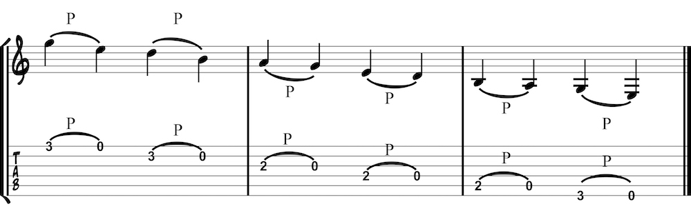
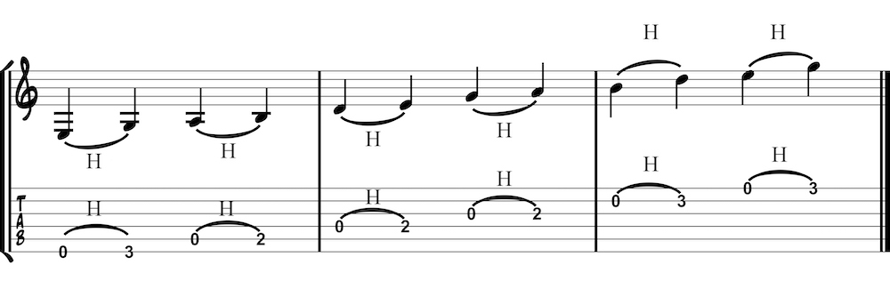
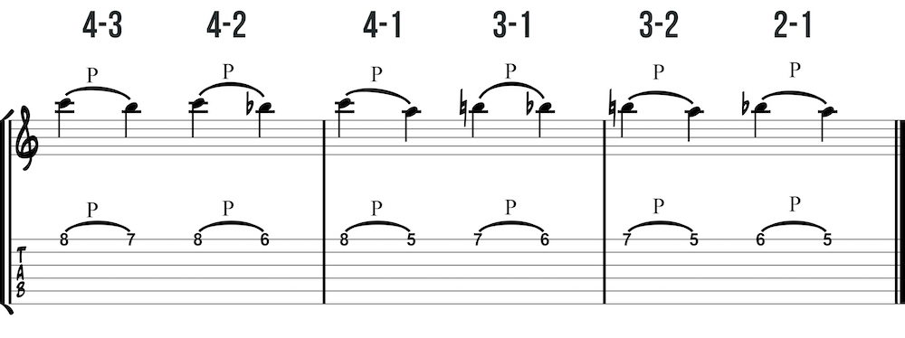
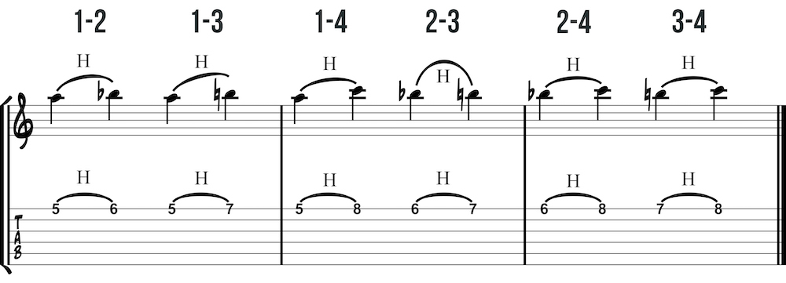

A pull-off is used when moving from a higher note to a lower note. Hammer-ons and pull-offs allow you to play smoothly connected legato notes and are useful for fast passages. Use the left-hand finger to pluck the string. A pull-off is usually indicated by a tied note and a P (or sometimes PO).
A hammer-on is used when moving from a lower note to a higher note. It is called a hammer-on for a reason. Imagine hammering a nail into a wall. It is not enough to simply whack the hammer and hope for the best. With this method you would end up with many holes in the wall. Like a hammer, it is important to precisely aim the tip of the finger at the fret and drive it in (i.e. keep pressure down). A good hammer-on will also have a bit of a wind-up in the left-hand finger just like you might do with a hammer.
The previous examples utilized open string hammer on’s and pull offs. These techniques are also possible between fretted notes. The following examples are similar to the finger combination warm up with only with two fingers.
 